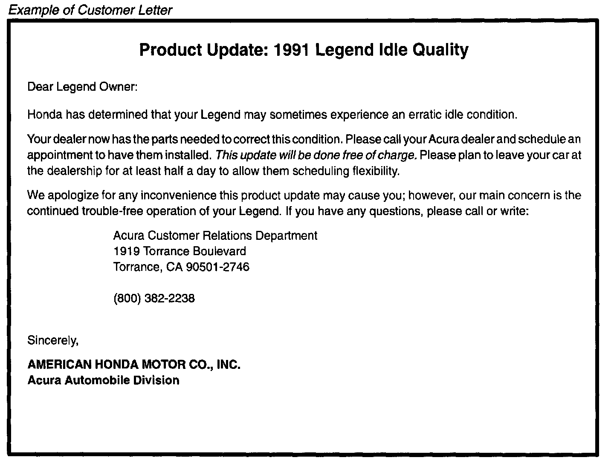

Campaign - Throttle Body Replacement: Overview
December 7, 1993BULLETIN NO.
93-025
YEAR
1991
MODEL
LEGEND
VIN APPLICATION
See VEHICLES AFFECTED
Product Update: Legend Throttle Body
BACKGROUND
The customer may sometimes experience an erratic idle. The updated throttle body eliminates this possibility.
VEHICLES AFFECTED
4-door: thru VIN JH4KA7...MC029711
Coupe: thru VIN JH4KA8...MC006531
CUSTOMER NOTIFICATION

Owners of affected vehicles will be contacted by mail and asked to take the car to a dealership for updating. The text of the customer letter is included in this service bulletin.
PARTS INFORMATION
Throttle Body Subassembly (includes gasket):
P/N 041 02-PY3-A00
WARRANTY CLAIM INFORMATION

Disclaimer